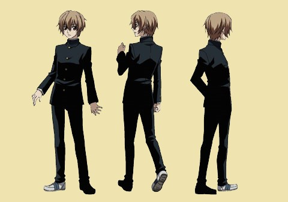
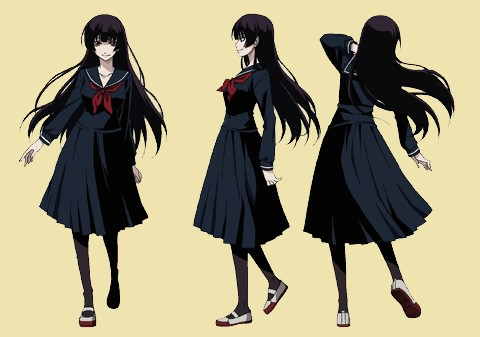
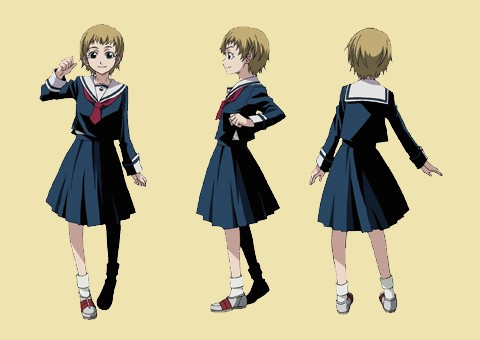
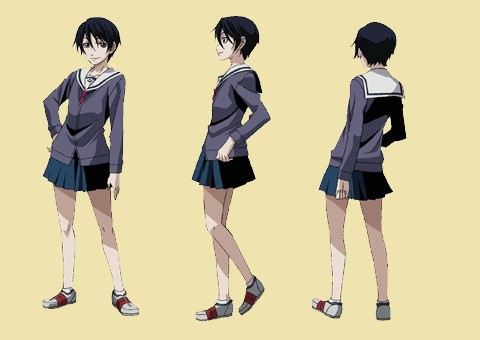

.png)
あらすじ
1年生の新谷貞一はある日、旧校舎に迷い込んだ際に不思議な女子生徒に出会う。彼女は自分こそが「旧校舎の幽霊」こと庚夕子であると名乗り、自分の死の真相を解明するために貞一に協力して欲しいと申し出る。夕子に引っ張られるように行動を共にするようになった貞一は、「旧校舎の大鏡」の向こうに隠されていた地下室で白骨化した夕子の死体を発見する。しかし、夕子は自分の死体を前にしても死因を思い出せず、真相解明は振り出しへ戻ることになる。貞一は夕子の死因解明を兼ねて学園内で起きるさまざまな怪奇現象を解き明かすため、怪異調査部を設立した。
登場人物
怪異調査部
- 新谷 貞一（にいや ていいち） 
- 本作の主人公。9月23日生まれ。誠教学園中等部1年C組。旧校舎に迷い込んだ際に「旧校舎の幽霊」こと夕子に遭遇し、それ以来行動をともにするようになる。夕子の姿が見え、声を聞くことができ、触れることもできる。夕子の死因解明と学園内で頻発する様々な怪奇現象の原因解明を兼ねて怪異調査部を設立。部長は夕子であるが、他の大多数の人間には夕子が見えないため部長代理を自称し、対外的には「部長は滅多に来ない」と説明している。
- 初登場時は眼鏡をかけていなかったが、本人いわく「本の読み過ぎ」で目が悪く、ときどき眼鏡をかけた姿で登場することもある。身長はさほど高くなく,それを気にしているような描写がある。性格は心優しく真面目だが、時おり熱い一面を見せることもある。
- 恋愛に関してはストレートに好意を寄せられること（主に夕子から）が多いが、まだ中学1年という年齢のせいもあってか女性そのものにまだ慣れておらず、戸惑ったり動揺したりすることが少なくない。ももえの友人たちや有子など、年上の女性からは「可愛い」と言われている。その一方、本人には自覚がないが、年齢の割には落ち着いており、頭も切れると評されている。
- 庚 夕子（かのえ ゆうこ） 
- 本作のメインヒロイン。1938年1月11日生まれ。学園内で「旧校舎の幽霊」として語り伝えられている女子生徒の幽霊。長いストレートの黒髪（姫カット）に切れ長の目、白い肌にすらりとした長身の大人びた美少女で、かなりの巨乳の持ち主。貞一と初めて出会った時は学園の現行の制服姿だったが（本人いわく「昔のってダサいから」）、ほどなくして亡くなった当時の古風なセーラー服に戻し、それ以降は特別なイベントの時を除いてずっとその姿を通している。夏以外は黒ストッキングや黒タイツを着用。自分の名前は覚えているが、それ以外は死因を含め生前の記憶のほとんどを失っている。
- 幽霊であるため、夜になっても眠らない。また、学園の敷地の外に出ることはできず、貞一と会えるのは彼が学園に来るときのみである。基本的に貞一と霧江以外にはその姿は見えないが、幽霊の噂を信じる者や、幽霊のような存在がいてほしいと願う者などには見えることがある。ただしその際は、本来の姿とは違った姿で見えてしまうことが多い。貞一のように普通に「見える」者にも、その精神状態によってはやはり異なる姿で見えてしまうことがある。また稀に一般人にも声が聞こえることがあるが、この場合も「何か聞こえた」という程度にしか認識されない。学園内には自分以外の幽霊は存在せず、自身が原因のもの以外の校内で起こる怪奇現象は全て「旧校舎の幽霊」とは無関係な別の原因で起きていると主張している。
- 自身の白骨死体を見られると激しく取り乱すほどに恥ずかしがる（本人曰く「これ以上ないほどの丸裸」）。
- もともとは、誠教学園の創立間もない頃に在学していた女子生徒だった。享年15（中等部3年生）。その死体は、旧校舎の大鏡に隠された地下室に白骨化した状態で放置されていたが、自分の死体を目の当たりにしてもなぜ死んだのかを思い出せず、怪異調査部の部長に就任し死因解明を続けることにする。自称「幽霊部長」。
- 影夕子（かげゆうこ）
- 夕子がこれまでに切り離してきた負の感情や記憶の集合体的な存在。基本的な姿としては、黒々とした気をまとい、髪はちぢれ、肌は黄土色、全てを憎むかのような禍々しい目、大きく割れた口を特徴とする。ただし場面によって多少変化があり、本来の夕子とさほど変わらないように見えることもある。
- 小此木 ももえ（おこのぎ ももえ） 
- ヒロインの1人。4月2日生まれ。誠教学園中等部2年生。怪異調査部が初めて解決した事件の依頼者である女子生徒。事件解決後、恩返しと称して学園内の怪奇現象に関する情報を収集し、怪異調査部へ持ち込む役回りを担っている。実家は小此木製菓という菓子屋。
- 思い込みが強い性格で、往々にして暴走しがち。貞一に対して尊敬に近い好意を抱いており、自分の方が上級生であると知った後も、貞一を「新谷さん」と呼び、敬語で話している。髪は明るい茶髪のショートヘア。体格はやや小柄だがスタイルは悪くなく、霧江曰く「意外とすごい」。靴下は時代遅れの白の3つ折にしている。
- 庚 霧江（かのえ きりえ） 
- ヒロインの1人。7月13日生まれ。誠教学園中等部2年生。貞一と同様、夕子の姿が見える。当初は何とも思っていなかったが、影夕子を目撃したことをきっかけに夕子を「神隠し」の悪霊と疑うようになり、それを警告するために貞一に接触。紆余曲折の後に怪異調査部に入ることになる。
- 髪は後ろを刈り上げたショートカット。普段は男性的な喋り方をし、まるで見得を切るような独特の立ち居振る舞いを見せて「強い」自分を演出しているが、実は相当に臆病かつ怖がり。
- 貞一のことはぶっきらぼうながら気にかけており、夕子の代わりに髪を伸ばしてみようかと考えるなど憎からず思っている様子。顔立ちは夕子とそっくりであり、霧江自身、そして生前の夕子を直接知る祖母の紫子もそれを認めている。ただし胸のサイズは小さく、そのことも含め夕子に対して憧れの混じったコンプレックスを感じている模様。また身長も夕子より低く、貞一とほぼ同じくらい。
- 実は夕子の血縁者（紫子の孫）であり、夕子は霧江から見て大伯母（祖母の姉）にあたる。その関係で、霧江は紫子の部屋で生前の夕子（と若かりし頃の紫子）が写っている写真を見たことがある。
学園の講師・先生
私立誠教学園
貞一達が通う私立学校。夕子の実家である庚家が山での神事を掌っていたが、その山を夕子の父が切り崩して創立したのが誠教学園である。校舎は小高い丘に建っており、60年にわたり増築を重ねてきたため、中学校舎と高校校舎が絡み合い、迷路のような建築物となっている。袋小路の廊下や誰も昇らない階段などがあり、それらが幾つもの怪異の噂を産み出している。中高一貫校であるが、昔は中等部のみだった。
学園の七不思議
学園に古くから伝わる怪談。七不思議として語られているものは、7つだけでなく数十以上に及んでいる。時代の流れによって、また人づてに語られていくうちに内容が変わっていったものもあれば、後述の「呪い」に関する噂により七不思議の全てを知ることを避ける人が多いため、その全容に関しての認識にズレが生じるためともいわれている。
- 旧校舎の幽霊（きゅうこうしゃのゆうれい）
- 学園の七不思議の1つ。旧校舎のどこかにある古い大きな鏡の前で振り返ると、旧校舎の幽霊に引きずり込まれ鏡の中を永遠に彷徨うことになるという噂。
- 隠れ鬼（かくれおに）
- 学園の七不思議の1つ。これはかくれんぼになぞらえて行う儀式で、放課後、他に誰もいないことを確認してから行わなければならない。
- 最初に人形を用意し、「夕子」と名前をつける。そして自分が鬼となり後ろを向き10を数えた後、人形を見つけて勝ちを告げて刃物を刺す。次は自分が校舎の同じ階の見つからない場所に隠れて待つ。隠れる側は「校舎から出てはいけない」「声を発してはいけない」「見つかってはいけない」という3つのルールを守らなければならない。この時、誰もいないにも関わらず、必ず何かが見つけに来る。
- 隠れ鬼を終える方法は、人形に遊びの終わりを告げること。しかし、もし遊びを正しく終えられなければ、隠れ鬼は永遠に終わらず、呼び出した何かに追われ続けることになる。
- 神隠し（かみかくし）
- 学園の七不思議の1つ。学園が出来たばかりで校舎の増築もされていなかった頃に事故で死んだ1人の女生徒が、自分の理不尽な死に怒り嘆いて、学園を彷徨う霊となった。その霊は、自分の苦しみを分かって欲しくて一緒に苦しんでくれる人の心を奪って“あっち”へ連れて行く。
- もうひとつの神隠し
- 七不思議の神隠しと大筋は同じ。学校が神社跡に建てられた祟りが原因で、事故で死んだと言われている女の子自身が神隠しに遭って消えてしまったという噂。
- 呪い石（のろいいし）
- 学園の七不思議の1つ。名前を刻むと名前を書かれた人物は死に、自分の名前を見つけると呪いを受けて死ぬとされている石。渡り廊下に囲まれた、旧校舎の中庭にある。元は60年前（昭和27年）の疫病で亡くなった人達に対する慰霊碑であり、そこに夕子の名前も刻まれていた。
- アカヒトさん
- 学園の七不思議の1つ。学園祭が近付くと現れる怪人。アカヒトさんは学校に遅くまで残っている生徒を見張っていて、陽が暮れた後にその姿を見てしまった者を捕まえる。そして、捕まった生徒は彼のコートを赤く染めるために全身の血を抜かれて死んでしまうという怪談。
- “アカヒトさん”は、“銅人さん”と書く。“銅人（あかひと）”というのは、学園のある地に古くから伝わる、人身御供の伝説にまつわる神様の使いの名前。江戸時代の頃より、土地の災いはその土地の神様の怒りの表れであり、それを鎮めるために“銅人”が村人を1人選んで、神様のところに連れて行って捧げていたという話が元になっている。
- 異次元十三怪談（いじげんじゅうさんかいだん）
- 学園に1つだけあるという13段の階段に関する噂。その最後の段は異次元への入り口となっており、入ってしまえば二度と戻ってくることはできないといわれる。階段は、「檻校舎（おりこうしゃ）」と呼ばれる旧校舎の、隠された部屋の中にある。階段を降りた先にあるドアは校舎の外壁につけられており、開けた先には何も無い。しかし、実は階段下の踊り場にもう1つの階段が隠されており、その階段を降りた先には畳敷きの古めかしい部屋が存在する。
- 七不思議の呪い
- 七不思議をすべて知ると大変なことが起きるという噂。家族に不幸が起きる・学校から出られなくなるなど、その呪いの内容には諸説あり、その実態は不確か。